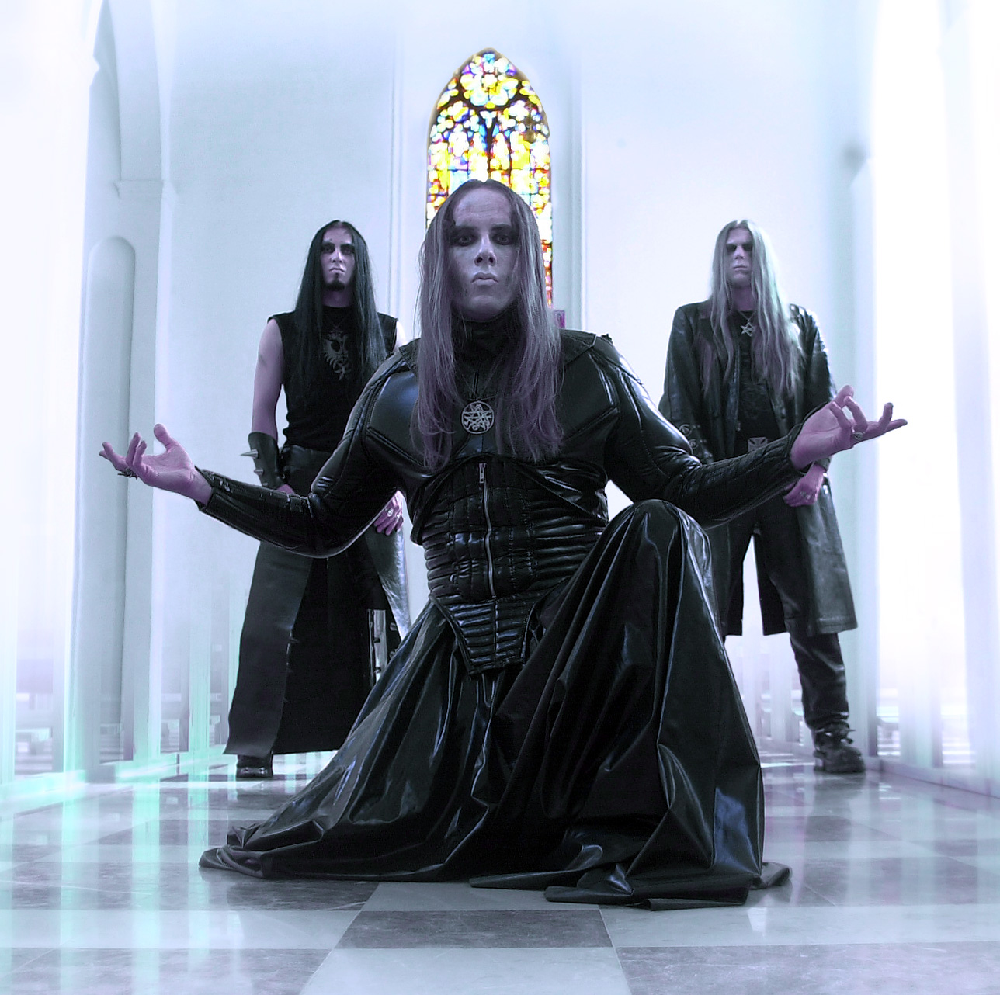

📅 25 Juin 2025 - 20:30
📍 Bordeaux
Écouter sur


Behemoth est un groupe polonais de blackened death metal fondé en 1991 à Gdańsk. Menés par leur charismatique frontman Nergal, ils sont devenus l'une des formations les plus respectées et les plus redoutées de la scène metal extrême mondiale. Leur musique se caractérise par des riffs dévastateurs, une batterie implacable et une atmosphère sombre et rituelle inspirée de l'occultisme et de la mythologie. Sur scène, Behemoth offre un spectacle visuel et sonore d'une intensité rare, entre pyrotechnie, costumes élaborés et énergie bestiale. Un concert à ne pas manquer pour les amateurs de metal extrême.